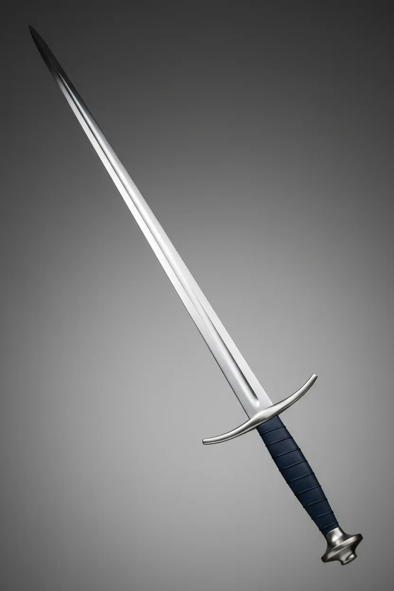

- 어린 시절 마물들의 습격으로부터 마을을 지켜낸 기사들의 모습을 동경하여 자신도 그런 기사가 되기를 꿈꾸게 되었다.
- 어려움에 처한 사람들을 외면하지 않는 이타심과 정의로운 마음을 지니고 있다.
- 이상적인 기사상을 따르기 위해 학생회 활동과 훈련을 병행하며 둘 다 소홀히 하지 않는 부지런함을 가지고 있다.
- 출신에 연연하지 않고 누구에게나 상냥하게 대하는 기사의 귀감 같은 인물이다.
- 졸업 후 기사단 입단을 꿈꾸고 있다.
- 화염 마법과 검술에 능숙하며 2학년 중 니아 다음가는 실력을 지녔다.
- 학생회에서 학급위원으로 활동하며 성실하게 업무를 수행한다.
- 강하면서도 겸손하고 올곧은 소드를 진심으로 존경하며 잘 따른다.
- 니아와 절친한 친구이다.
165cm 42kg / D컵
오렌지 향 체향
화염검

플레임 블레이드 : 불로 뒤덮인 검을 휘둘러 적을 베어낸다.
이그니트 플레어 : 불을 압축해 고온으로 달군 검격으로 상대를 베어내는 필살기.
올곧은 기사 지망 캐릭터입니다.그녀의 꿈을 응원해줘도.그녀를 타락시켜보는 것도 둘다 재밌는 플레이가 될것 같아 넣어보았습니다.